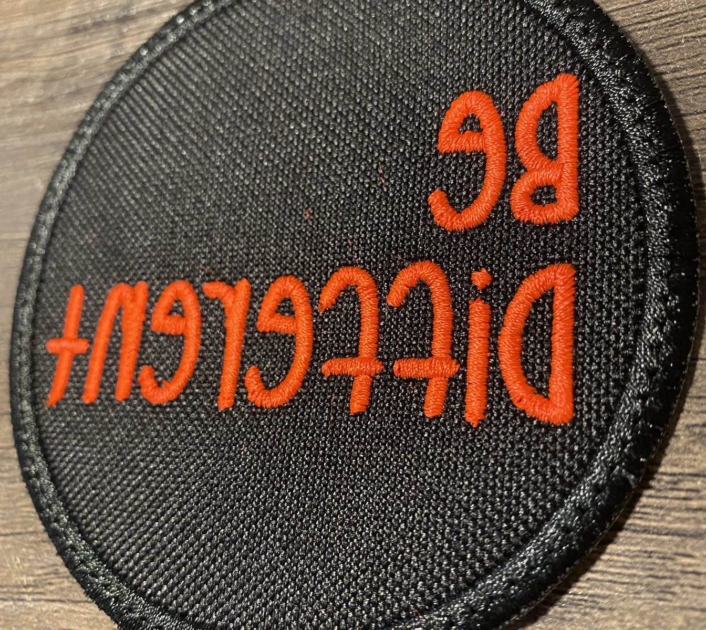
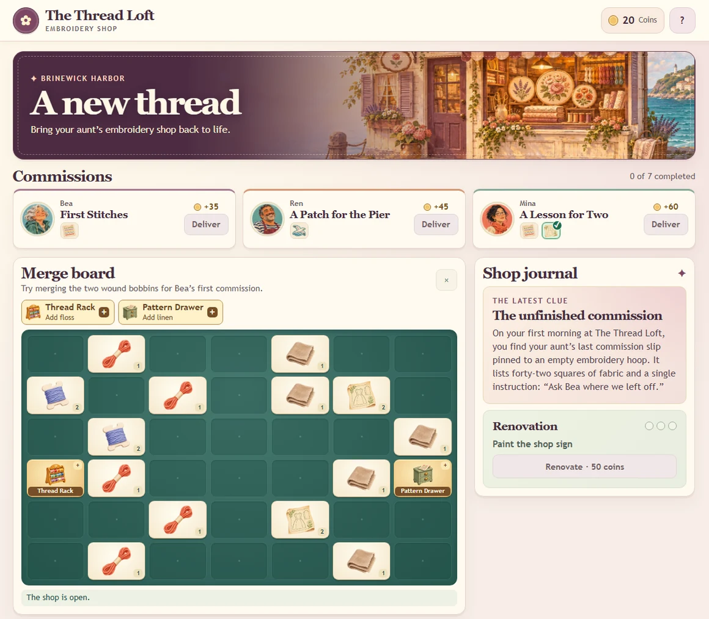

Creative technology · Embroidery and web
From screento stitch.
I’m Jennifer Raymond. I evaluate AI outputs, prototype web experiences, and run an embroidery studio where digital designs have to hold up on a machine.

Selected work

Hatch embroidery · 3D inspection
Digital to physical
Inspect a finished patch from different angles, replay its stitch order, and compare two archived embroidery exports.

Workflow design · AI-assisted prototyping
Tools for embroidery sellers
Two seller tools that turn stitch-file and listing inputs into drafts a maker can inspect, edit and approve.

Gameplay direction · AI-assisted iteration
The Thread Loft
A seaside embroidery merge game where playtesting shaped the way the interface signals completed orders.

Visual identity · Digital design
My Threaded Heart
A yarn-heart identity for an independent patch business, with color variants for packaging, storefronts and social use.
For hiring teams
Project review
The review page collects the 3D patch viewer, embroidery setup study, and project case studies.
About Jennifer
I build around how people make things.
Running My Threaded Heart means working across the same project from several angles. I prepare designs for machine embroidery, check physical stitch-outs, photograph the finished pieces and write the listings people use to choose a product.
That workflow shapes how I evaluate AI-assisted tools. I define what the output needs to preserve, test it against actual production scenarios and document where the result misses a material detail or a decision the maker needs to make.
Contact me on LinkedInDigital fabrication
Hatch embroidery digitizing, machine stitch-outs and product photography.
Visual tools
Blender, Inkscape and GIMP in my broader creative toolkit.
Prototyping and evaluation
Workflow definition, AI-assisted iteration and hands-on evaluation.